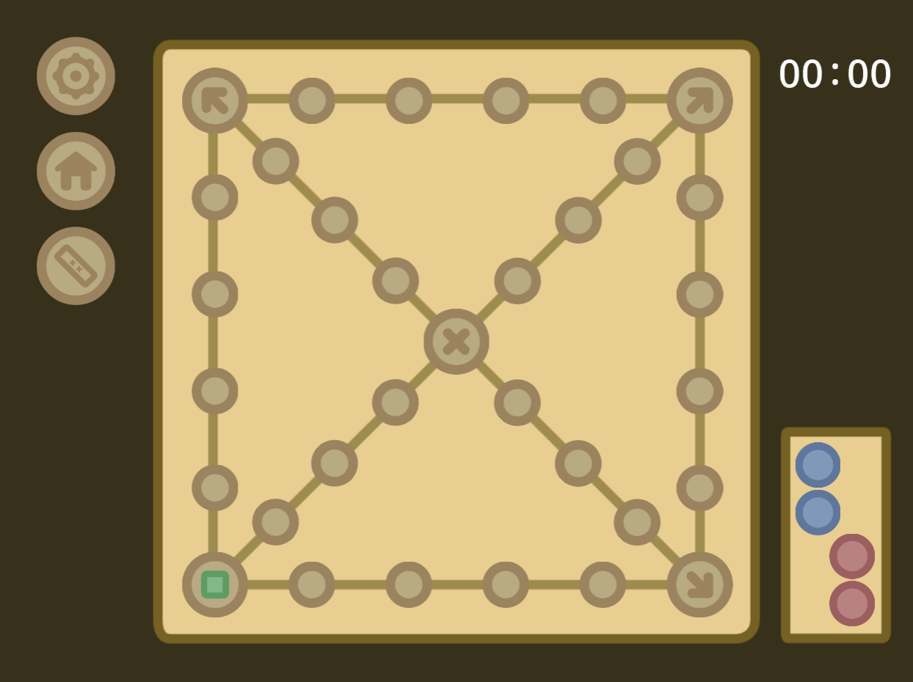

〈윷놀이-게임규칙〉

-
- 윷 던지기
- 윷을 던지면 오른쪽에서 각 확률에 따라 "도, 개, 걸, 윷, 모" 그리고 "뒷도"와 "낙"이 나타납니다.
〈각 윷의 확률〉
- 도: 23.5294%
- 개: 35.2941%
- 걸: 17.6470%
- 윷: 5.8823%
- 모: 5.8823%
- 뒷도: 5.8823%
- 낙: 5.8823%
-
- 말 고르기
- 윷이 던저진 후 집 또는 말판 위에 있는 자신의 말을 클릭할 수 있습니다.
〈각 눈의 행동 방향〉
- 작은 눈: 시계방향으로 이동합니다.
- 큰 눈: 중앙 눈으로 이동하며, 백도가 작동하지 않습니다.
- 중앙 눈: 처음 위치로 이동합니다.
-
- 퀴즈 풀기
- 말이 이동하면 OX 형식의 퀴즈가 나타나며 글릭해서 없어지게 할 수 있습니다.
〈퀴즈를 풀기위한 상식〉
- 영어는 로망스어군에 속하지 않고 인도유럽어족 게르만어파 계열로 분류된다.
- 영어는 서계르만어군 앵글로프리지아어 및 색슨어기원으로 한다.
- 영어는 독일어처럼 엄격한 성, 수 격, 굴절을 가진 굴절어였다.
- 현대 영어는 4번로 분류되게 된 언어이자 영어의 유형이다.
- 영어의 모음은 26개의 글자중 a, e, i, o, u 5개이다.
처음 페이지로